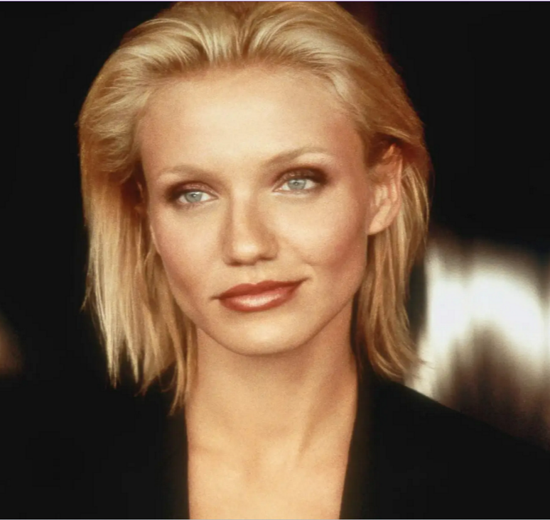

About Us
Welcome to Charlie's Angels Agency, where secrecy is our specialty. As a top-secret organization, we specialize in covert missions and discreet operations. Our team of elite agents is ready to tackle any challenge with precision and efficiency. Whether it's surveillance, intelligence gathering, or espionage, we've got you covered.
Meet Our Boss

The Charlie Townsend (Founder of Townsend Agency)
Bio:
- Charlie Townsend is the visionary founder and mastermind behind the renowned "Charlie's Angels" agency. With a captivating blend of charm, wit, and intellect, Charlie is a legendary figure in the world of espionage, known for his unmatched ability to assemble and lead a team of exceptional women.
- A former intelligence operative with a storied career in covert operations, Charlie established his agency with a singular vision: to empower women to take on daring missions and defy expectations in a male-dominated field. Under his guidance, "Charlie's Angels" quickly rose to prominence, becoming synonymous with courage, resourcefulness, and female empowerment.
- Beyond his role as the agency's founder and chief coordinator, Charlie remains a mysterious and enigmatic figure, with tales of his past exploits and adventures shrouded in secrecy. Yet, his dedication to his team and commitment to justice are unwavering, cementing his legacy as a true legend in the world of espionage.
Meet Our Angels

Agent Natalie Cook
Specialty: Master of Disguise & Tactical Expert
Bio:
- Agent Natalie Cook is the epitome of versatility and charm within the ranks of "Charlie's Angels." With her infectious energy and quick wit, Natalie brings a dynamic presence to every mission, earning her the admiration of both colleagues and adversaries alike.
- A former model turned elite operative, Natalie's journey into the world of espionage was anything but conventional. Yet, her innate ability to adapt to any situation and blend seamlessly into any environment quickly caught the attention of Charlie Townsend, who saw in her the potential for greatness.
- As a master of disguise, Natalie's talent for assuming various personas and identities is unparalleled, allowing her to infiltrate even the most secure locations with ease. Whether posing as a high-society socialite or a skilled athlete, Natalie's chameleon-like abilities make her an indispensable asset in the field.
Agent Alex Munday
Specialty: Strategic Analyst & Martial Arts Expert
Bio:
- Agent Alex Munday is the epitome of grace under pressure within the elite ranks of "Charlie's Angels." With her sharp intellect and unparalleled martial arts skills, Alex embodies the perfect blend of brains and brawn, making her an indispensable asset to the team.
- A former software engineer with a knack for decoding complex algorithms, Alex's journey into the world of espionage began when she caught the eye of Charlie Townsend with her exceptional problem-solving abilities. Recognizing her potential, Charlie recruited her to join his team of Angels, where she quickly proved herself as an invaluable strategist and analyst.
- Yet, beneath her stoic exterior lies a compassionate and fiercely loyal individual, dedicated to protecting the innocent and seeking justice for those who cannot defend themselves.
Agent
Specialty: Field Commander & Weapons Specialist
Bio:
- Agent Dylan Sanders is the fearless leader and heart of the renowned "Charlie's Angels" team. With her unmatched courage, determination, and expertise in weaponry, Dylan is a force to be reckoned with in the world of espionage.
- A former juvenile delinquent turned top-tier operative, Dylan's journey into the world of espionage began when she caught the eye of Charlie Townsend with her unmatched combat skills and street smarts. Recognizing her potential, Charlie recruited her to lead his team of Angels, where she quickly proved herself as an indomitable force on the field.
- As the team's field commander, Dylan is known for her strategic brilliance and fearlessness in the face of danger. Whether it's leading a tactical assault or navigating treacherous terrain, Dylan's leadership ensures the success of every mission undertaken by the agency.